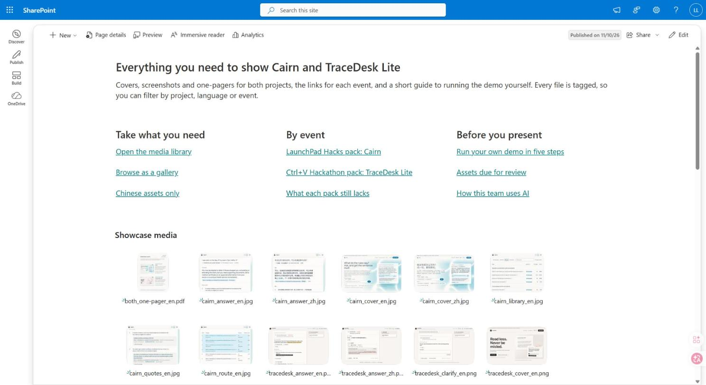
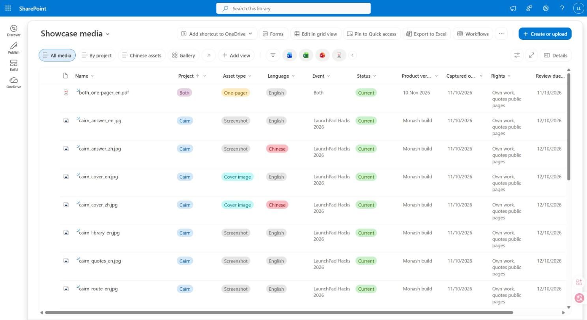
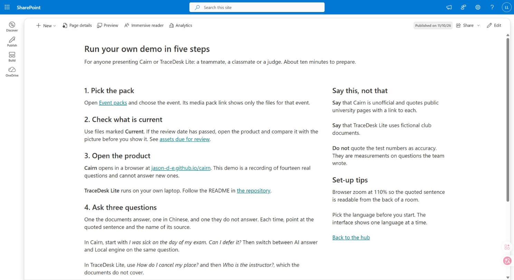
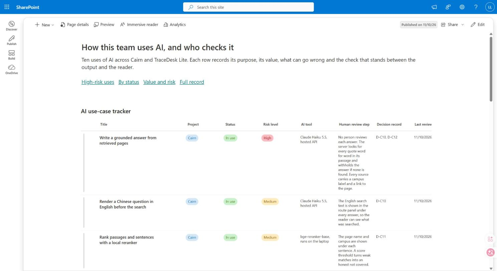
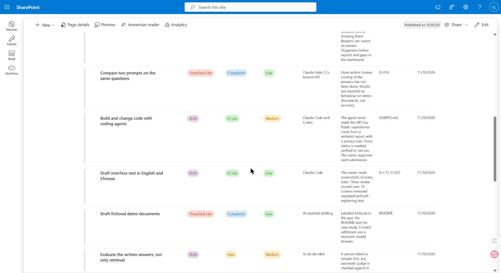

Showcase knowledge hub演示资料中心
A SharePoint hub that holds everything needed to present Cairn and TraceDesk Lite: covers, screenshots, one-pagers and the links for each event. Every file is tagged, so a presenter can filter to exactly the pack they need. A second area records how the team uses AI and who checks it. 一个 SharePoint 资料中心，放着展示 Cairn 和 TraceDesk Lite 要用的全部材料：封面、截图、一页介绍，以及每场活动的链接。每个文件都贴了标签，要演示的人可以直接筛出自己要的那一包。另一个区域登记团队怎么用 AI、由谁检查。

The problem问题
Two projects, two events, two languages. The demo materials were spread over project folders, and only the person who made them knew which cover was current or which screenshot showed the Chinese interface. Anyone else had to ask. A folder cannot fix that: a file lives in one folder, but people look for it by project, by language and by event.两个项目、两场活动、两种语言。演示材料散在各个项目文件夹里，只有做的人自己知道哪张封面是现行的、哪张截图是中文界面，别人只能来问。文件夹解决不了这个问题：一个文件只能放在一个文件夹里，而大家会按项目、按语言、按活动去找它。
What it holds里面有什么
- A media library where each file carries its project, asset type, language, event, product version, approved use, rights and status.一个素材库，每个文件都带着项目、类型、语言、活动、产品版本、可用场合、使用权和状态。
- Saved views that answer the usual requests in one click: Chinese assets only, one event’s pack, what is due for review.存好的视图，一点就得到常见的需求：只看中文素材、某场活动的一整包、哪些该复查了。
- An event list that links each pack to its demo, source and case study, and says what the pack still lacks.一张活动表，把每一包和它的演示、源码、案例页连起来，并写明这一包还缺什么。
- A guide to running the demo yourself, in five steps.一篇五步指南，教你自己把演示做一遍。
- A register of ten ways the team uses AI, each with its purpose, value, risks, inputs, the people affected and the check that stands before the reader, beside a prompt library, decision records and a handover page.一张登记表，记着团队用 AI 的十种方式，每一种写明目的、价值、风险、输入、涉及的人，以及挡在读者前面的那道检查；旁边还有提示词库、决策记录和交接页。




How it is organised怎么组织的
Three kinds of part: a library for files, lists for records, pages to lead people to both.三种零件：存文件的库、存记录的列表、把人带到这两处的页面。
Tags, not folders用标签，不用文件夹
The Chinese cover of Cairn is one file. It is tagged Cairn, cover image, Chinese and LaunchPad Hacks, so it turns up under each of those without being copied. File names follow one pattern, project, what it shows, language, so the name alone says what the file is.Cairn 的中文封面只是一个文件。它的标签是 Cairn、封面图、中文、LaunchPad Hacks，所以按这四样中的任何一样都能找到它，不用复制。文件名按一个规则起：项目、内容、语言，只看名字就知道是什么。
A view is a saved answer视图就是存好的答案
A filter disappears when you leave. A view stays, and has its own link. The pack for an event is a view of the same library, so adding a file to the library adds it to the pack.筛选一离开就没了。视图会留下来，还有自己的链接。某场活动的一包材料就是同一个库的一个视图，所以往库里加一个文件，这一包里就多了它。
Keeping it current不让它过期
A replaced file is marked Superseded, not deleted, so old links keep working and nobody uses the wrong version. Every file has a review date. The TraceDesk Lite screenshots were taken from version 0.4 and the product is now 0.5, so they sit at the top of the review list.被替换的文件标成“已被取代”，不删除，旧链接照样能打开，也不会有人用错版本。每个文件都有复查日期。TraceDesk Lite 的截图来自 0.4 版，产品现在是 0.5 版，所以它们排在复查清单最前面。
Rights travel with the file使用权跟着文件走
One tag records what a picture shows: only our own work, short quotes from public pages, or fictional demo data. Another records where it may be used. The person who picks up a file does not have to ask.有一个标签记着图里出现了什么：只有我们自己的东西、公开页面的短引文，还是虚构的演示数据。另一个标签记着它可以用在哪里。拿文件的人不用再问。
An AI register that names the check点名检查步骤的 AI 登记表
Each use of AI is a row: what it is for, what it is worth with the measured result, what can go wrong, what data goes in, and the step that checks the output. Two uses are rated high risk because a wrong deadline could reach a reader; both are checked by code on every answer. A page beside the list states the six rules the team works by.每一种 AI 用法是一行：用来做什么、值多少并附实测结果、可能出什么错、送进去什么数据、由哪一步检查输出。有两种用法定为高风险，因为错的截止时间可能送到读者面前；这两种每次回答都由代码检查。列表旁边有一页，写着团队遵守的六条规则。
What is in it里面的数量
Counted in the hub on 10 November 2026.2026 年 11 月 10 日在资料中心里数出来的。
| Part部分 | Contents内容 |
|---|---|
| Pages页面 | 4: the home page, the demo guide, how the team uses AI, and a handover page.4 个：首页、演示指南、团队怎么用 AI、交接页。 |
| Media library素材库 | 20 files, including two demo videos; 11 metadata columns; 8 saved views.20 个文件，含两个演示视频；11 个元数据列；8 个存好的视图。 |
| Event packs活动资料包 | 2 events, each linked to its media, demo, source and case study.2 场活动，各自连着素材、演示、源码和案例页。 |
| AI registerAI 登记表 | 10 uses: 2 high risk, 4 medium, 4 low. 7 in use, 2 completed, 1 idea.10 种用法：高风险 2、中 4、低 4。7 种在用、2 种已完成、1 个想法。 |
| AI recordsAI 记录 | 8 prompt versions, 12 decision records, 4 review notes, 8 tracked actions, a briefing note, a slide deck and 3 templates.8 个提示词版本、12 条决策记录、4 条评审记录、8 项跟踪行动，以及一份简报、一套幻灯片和 3 个模板。 |
Limits局限
As of November 2026截至 2026 年 11 月
- Nobody outside the team has used it yet. Feedback from readers and usage data are the next step.团队以外还没有人用过。读者反馈和使用数据是下一步。
- It is small: two projects and two events. The structure is what carries over to a larger library.它很小：两个项目、两场活动。能搬到更大的资料库里去的是这套结构。
- The workspace is a private Microsoft 365 one, so this page shows it in screenshots instead of a link.工作区是不公开的 Microsoft 365 空间，所以这一页用截图展示，不放链接。